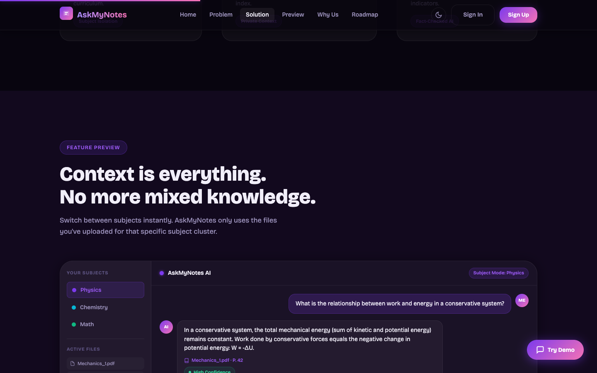

Work · 03
AskMyNotes AI
Subject-scoped AI study copilot that answers only from uploaded notes, provides page-level citations, and prevents hallucinations.


Measured
| Metric | Value | Window | Source |
|---|---|---|---|
| Placing, of about 50 teams | 1st | Mar 2026 | Noesis hackathon results; top-10 shortlist judged live |
| Prize pool | Rs 50K | Noesis hackathon |
Problem
General chatbots mix knowledge across subjects and invent sources. A student revising wants answers grounded in their own notes, with a page number they can check.
What I built
Authentication end to end and the user-facing frontend, in eight hours. The RAG pipeline retrieves only from uploaded notes for the selected subject so knowledge never bleeds between subjects. Each answer carries a citation, confidence badge, and page reference.
Mid-event the organisers changed the problem statement. Right before submission our connection dropped with the demo broken. We split roles, debugged in parallel and presented calm.
Result
1st of about 50 teams, shortlisted to the top ten and judged live, with a Rs 50K prize pool.
Learned: Division of work beats heroics. When the connection died before submission, three people debugging in parallel is what saved it.